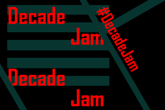
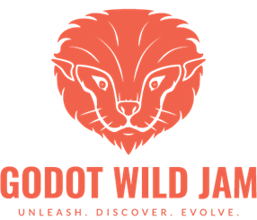
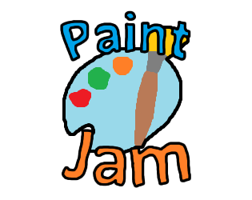

Chaque game jam possède un format composé d'un ensemble de contraintes et de règles qui peuvent varier d'une game jam à l'autre. Même si dans la grande majorité des cas, le format reste plus ou moins identique : 48 heures pour faire un jeu sur un thème donné ; certaines game jams se caractérises par leurs contraintes et règles inédites et loufoques. Voilà quelques exemples de caractéristiques qui peuvent différer.
Contrainte de temps
La grande majorité des game jams possèdent une limite de temps de 48 heures ou 72 heures. En revanche, des game jams plus rapides ou plus longues existent, pouvant aller de 3 heures à plusieurs mois voire des années entières.

Logo de la Decade Jam
La Decade Jam est une game jam qui dure 10 ans, de 2020 à 2030. À l'heure où à été rédigé cette article, plus de 3800 personnes se sont inscrites et plus de 2200 jeux ont été rendus. L'objectif est de proposer une game jam où les développeurs ne doivent pas se sentir trop préssés pour rendre leur jeu ainsi que de voir à quel point les jeux seront différents entre ceux postés au tout début de la jam et à sa fin.
Thème
Une game jam peut être centrée autour d'un thème afin de stimuler la créativité des participants. Celui-ci est souvent annoncé lorsque la game jam commence. Certaines game jams proposent une phase de vote où les participants peuvent voter parmi une longue liste de thèmes, celui amassant le plus de points est choisi comme thème central pour la game jam.
Voilà quelques exemples de thèmes pour vous donner une idée de ce qui peut être annoncé : "hors de controle", "construit à l'échelle", "roles inversés", "tu es l'arme", "le calme avant la tempête", "lancé de dé". Ces thèmes sont très larges afin de faire travailler l'esprit créatif des participants. L'un de ces thèmes vous a-t-il inspiré une idée de jeu viéo ?
Matériel utilisé
Une game jam peut forcer les participants à utiliser des logiciels bien précis. Certaines game jams sont par exemple centrées sur l'utilisation d'un langage ou logiciel de programmation. De plus, certaines obligent les équipes à utiliser des logiciels peu pratiques pendant toute la durée de l'événement.

Logo de la Godot Wild Jam
La Godot Wild Jam a lieu tous les mois et demande à ce que tous les participants rendent un jeu réalisé sur le moteur de jeu Godot. En plus du thème, cette game jam possède un système de "wildcards", des limitations supplémentaires pour ajouter du challenge, les jammeurs sont libres d'en choisir une, plusieurs ou aucune. Ce genre de jams est très apprécié dans les communautés de moteurs de jeu car conviviales.

Logo de la Paint Jam
La Paint Jam demande tout simplement à ce que l'intégralité des graphismes et textures utilisés dans le jeu soient faits sur le logiciel Paint ! Cette jam est une bonne opportunité pour créer un jeu sans se soucier de la qualité des images du jeu, l'objectif étant de créer quelque chose en s'amusant et d'amuser les autres.
À noter que des game jams qui ne sont pas centrées sur les jeux vidéo existent, les jeux de société et les jeux de cartes sont souvent le sujet de game jams.
Contrainte de jouabilité
Après l'annonce du thème, certaines game jams demandent aussi à ce qu'une mécanique de jeu bien précise soit implémentée dans les jeux. Par exemple, exiger que le jeu puisse être joué avec seulement deux boutons ou que l'heure de l'ordinateur ait un impact direct sur la jouabilité du jeu.